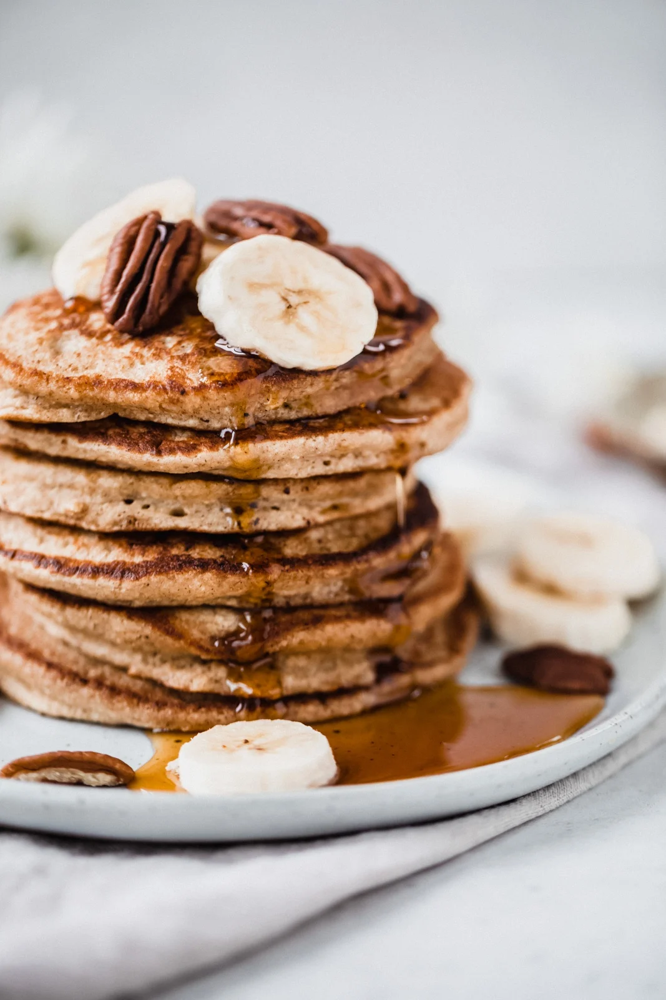

Banana-oatmeal pancakes

Description
The easiest banana oatmeal pancakes made right in the blender! These fluffy healthy pancakes are naturally gluten free, dairy free and contain no flour or added sugar. Get ready for a simple yet delicious breakfast!
Ingredients
- Bananas;
- Eggs (2);
- Milk (almond milk preferably);
- Rolled oats;
- Pancake staples: you’ll also need baking powder to allow the pancakes to get nice and fluffy, plus some cinnamon, vanilla extract & salt for flavor.
Steps
- Blend the ingredients. Yes, you’ll literally add all of the ingredients to a blender, and blend on high until smooth!
- Let batter sit. You’ll then want to let the batter sit in your blender for about 2 minutes while you heat up your pan.
- Cook & flip. Add olive oil or coconut oil to a griddle or large nonstick pan and place over medium heat. Add pancake batter 1/3 cup at a time and cook for about 2-3 minutes or until golden brown and tiny bubbles appear around the edges. Flip and cook 2 minutes more.
- Serve & devour. Serve pancakes with fresh fruit and a drizzle of pure maple syrup if you’d like!